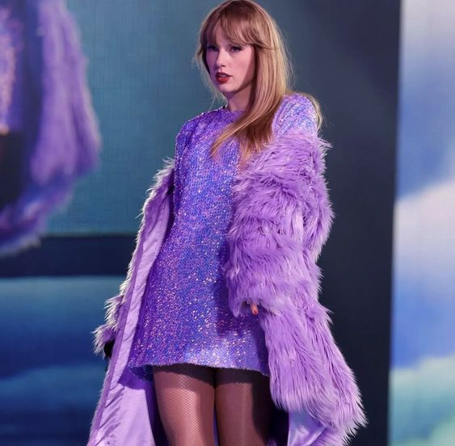
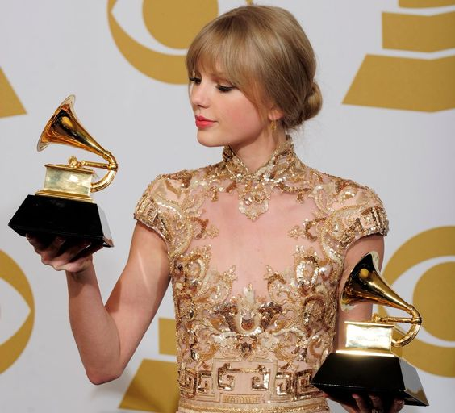

Taylor Alison Swift (Reading, 13 de dezembro de 1989)
é uma cantora, compositora, atriz, diretora e roteirista
norte-americana. Suas composições narrativas, muitas vezes
inspirada pelas suas experiências pessoais, tem recebido
ampla cobertura mediática e elogios críticos. Swift mudou-se
para Nashville aos 14 anos de idade para se tornar uma cantora
de música country, assinando um contrato de composição com a
Sony/ATV Music Publishing em 2004 e um contrato de gravação
com a Big Machine Records em 2005.
Seu álbum de estreia autointitulado de 2006 se tornou o álbum mais
longo dos anos 2000 a permanecer na parada de música da Billboard,
a Billboard 200. Seu terceiro single, "Our Song", fez dela a cantora
e compositora mais jovem a alcançar o número um na Billboard Hot Country
Songs. O segundo álbum de estúdio de Swift, Fearless (2008), ganhou quatro
prêmios Grammy e produziu os single "Love Story" e "You Belong with Me".
Tornou-se o álbum mais vendido de 2009 nos Estados Unidos e foi certificado
com disco de platina pela RIAA. O terceiro álbum auto-escrito de Swift,
Speak Now (2010), gerou o single vencedor do Grammy "Mean", o álbum recebeu
muitas avaliações positivas por parte da crítica musical, registrando uma
média de 77 pontos de aprovação no agregador de resenhas Metacritic. Seu
quarto álbum de estúdio, Red (2012), deu a ela seu primeiro single número
um na Billboard Hot 100, "We Are Never Ever Getting Back Together". Em seu
primeiro dia de vendas, assumiu a liderança da iTunes Store de diversos
países, inclusive a do Brasil. Seu quinto álbum de estúdio e seu primeiro
projeto totalmente pop, 1989 (2014), lançou os singles número um, na Billboard
Hot 100, "Shake It Off", "Blank Space" e "Bad Blood", e ganhou três prêmios Grammy
- incluindo o de Álbum do Ano - tornando Swift a primeira mulher a ter sucesso no
primeiro lugar no Hot 100 e a primeira mulher a ganhar o Álbum do Ano duas vezes
como artista principal. Seu sexto álbum de estúdio, com influências de hip hop,
Reputation (2017), fez dela a primeira e única artista na história da música a
ter quatro álbuns vendendo mais de um milhão de cópias em sua primeira semana nos
EUA e gerou seu quinto single número um do Hot 100, "Look What You Made Me Do".
Seu sétimo álbum de estúdio, Lover (2019), bateu o recorde das entradas
simultâneas do Hot 100 por uma artista feminina e se tornou o álbum de estúdio
mais vendido em 2019. Lover e seus singles receberam três indicações no Grammy
Awards de 2020, incluindo Melhor Álbum Vocal Pop, sendo esta a terceira indicação
consecutiva da cantora na categoria, após 1989 e Reputation. Um dia antes do
lançamento, Taylor anunciou seu oitavo álbum de estúdio, Folklore (2020), que
se tornou, de acordo com o Guinness World Records, o álbum por uma artista feminina
com mais reproduções em seu primeiro dia no Spotify, e três das suas faixas atingiram
o top 10 das tabelas oficiais em oito países. Evermore, nono álbum de estúdio da
cantora, foi lançado em 11 de dezembro de 2020, pela Republic Records, poucos
meses após o lançamento do oitavo álbum. Todas as 15 faixas do álbum entraram na
parada Billboard Hot 100 na mesma semana, lideradas pelo primeiro single, "Willow",
mais de um milhão de cópias de Evermore foram vendidas globalmente em sua primeira
semana.

Tendo vendido mais de 50 milhões de álbuns e 150 milhões de singles mundialmente,
Swift é um das artistas de música mais vendidos no mundo de todos os tempos. Seus
prêmios incluem 10 Grammy Awards, um Emmy Award e sete recordes no Guinness World
Records; ela é a artista e mulher mais premiada no American Music Awards (29 vitórias)
e no Billboard Music Awards (23 vitórias), respectivamente. Ela foi incluída em
vários rankings, como a lista anual da revista Time das 100 pessoas mais influentes
do mundo (2010, 2015 e 2019), os 100 maiores compositores de todos os tempos da
revista Rolling Stone (2015), a Forbes Celebrity 100 (primeira colocada em 2016 e
2019), o Melhor Artista de Charts de Todos os Tempos da revista Billboard (em
oitavo lugar). Ela foi nomeada Artista de Gravação Global do Ano duas vezes pela
Federação Internacional da Indústria Fonográfica (IFPI) (2014 e 2019), Mulher da
Década (2010s) pela revista Billboard e Artista da Década (2010s) pelo American
Music Awards.

Taylor Swift
Um pouco de sua trajetória...